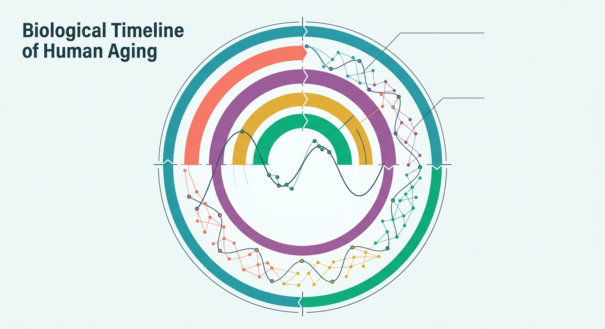

The Human Metronome: A New 54-Biomarker Compass Decodes the Five Epochs of Aging

Imagine your body as a massive, complex orchestra. For decades, medicine has listened to the performers individually—pointing at a spiking cholesterol level here, or a dipping thyroid hormone there. But we have lacked the conductor’s master score, the underlying rhythm that explains how the entire ensemble shifts in harmony over a lifetime. Now, a pioneering study has introduced a mathematical framework that acts as a GPS for human aging, revealing that our biology does not merely decay in a slow, linear slide. Instead, it travels through five highly distinct, predictable epochs of life.
Published in bioRxiv, the research introduces the Principal Component Life Trajectory (PCLT). By analyzing 54 distinct blood-based biomarkers from over 11,000 participants in the National Health and Nutrition Examination Survey (NHANES), researchers reconstructed how our systemic physiology unfolds. To measure this, they developed a metric called the Euclidean Trajectory Distance (ETD)—effectively calculating how far an individual’s internal chemistry drifts year-over-year. The result is a striking, unbiased map of human life divided into five phases: Early Adolescence, Sexual Divergence, Sexual Convergence, Late Adulthood, and Advanced Aging. In our youth, male and female biologies drift rapidly apart; by middle age, they begin to converge again, aligning their physiological profiles before entering the steep, shared descent of late-stage aging.
For the longevity biotech sector, the PCLT is a potential game-changer. Clinical trials for anti-aging therapeutics have long been bottlenecked by a fundamental problem: we cannot wait thirty years to see if a drug extends human lifespan. By utilizing the PCLT as a surrogate endpoint, drug developers can observe in real-time whether a therapeutic candidate—be it a senolytic, a metabolic optimizer, or a cellular rejuvenation therapy—actually halts or reverses a patient's progress along this physiological highway. The researchers demonstrated that chronic diseases act like gravitational wells, prematurely pulling individuals into advanced stages of the PCLT, whereas healthy lifestyles flatten the curve.
Yet, before biotech funds begin allocating capital based solely on PCLT scores, a healthy dose of scientific skepticism is warranted. The framework’s primary limitation lies in its data source: NHANES is largely cross-sectional. The researchers reconstructed a lifetime trajectory by stitching together snapshots of different people at different ages, creating a "synthetic cohort" rather than tracking the exact same individuals over decades. This approach risks blending out cohort-specific variables, such as dietary shifts or environmental exposures unique to specific generations. Furthermore, translating a population-level mathematical model into a reliable, diagnostic tool for individual clinical decisions is a notorious hurdle. Until prospective, longitudinal clinical trials prove that dragging a patient's PCLT coordinates backward actually translates to a longer, healthier life, this elegant map remains an incredibly sophisticated compass still waiting to prove its true north.
Sources & Citations:
Primary Source: The Principal Component Life Trajectory (PCLT): Mapping Sex-Specific Physiological Change Across the Human Lifespan (bioRxiv)
- The Principal Component Life Trajectory (PCLT): Mapping Sex-Specific Physiological Change Across the Human Lifespan. bioRxiv. https://doi.org/10.64898/2026.09.08.750036